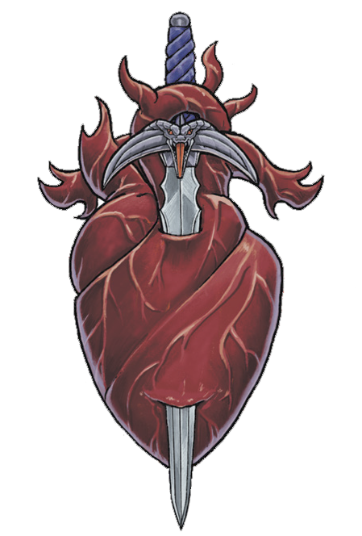

嘲弄Mockery
天命诸神的准则构成了我们文明的基石。博德雷将我们聚集在一起，奥林的律法让我们在和平中共存。当和平无路可走的时候，杜·顿恩赐予我们自卫的力量，而杜·哈拉教导我们富有同情与智慧地运用这份力量。强者为什么要保护弱者？战士们为何要宽恕平民与败敌？因为我们遵循诸神的教导，众人皆得繁荣。战争不仅仅是为了胜利——更是能够承担战后的结果。
——萨恩的天命诸神祭司，菲萨索·莫根Phthaso Mogan
“为什么强者保护弱者？“提出这个问题的人，无非是想让你相信他们是强者而你是弱者，失去了他们你将无从自立。说这种话的人只懂得一种战争规则，并且迫切希望你也认同和遵循同样的法则。吾主揭示了真相：强者保护弱者，是因为他们惧怕”弱者“意识到自己蕴藏的力量。试想现在有百只猎犬追逐两匹狼，叫嚣着要狼在光天化日下堂堂正正对决。其中一匹狼勇猛应战，最终被猎犬撕成碎片。另一匹狼却洞悉真理："我无法同时战胜它们，但在阴影中，我的利齿与它们同样锋利。"每个夜晚，这匹狼随着暗影猎杀一只猎犬。猎犬尽可咒骂它卑劣不堪，但百日之后，唯有这匹狼屹立不倒。你要做哪匹狼？是战死与阳光下保全虚名，还是即使涉足阴影也要通往胜利？
――死亡之门的＂红刃＂拉克“Redblade” Rrac, of the Deathsgate Adventurers’
Guild
在世界诞生之初的第一纪元，有三兄妹向死亡之主发起挑战。他们集结麾下勇士，立誓黎明时分在战场上与死神决一死战。当死亡之主带着亡灵大军压境时，长兄却不见踪影——他终究缺乏直面强大敌人的勇气。目睹昔日战友如今服务于死者的军阵，凡人士兵们战栗不已。但年轻的弟弟以勇武重振士气，力破亡者大军；妹妹则召引烈日辉光，灼盲了死神的双眼，直到她的将士安然撤离。虽然战局已败，两位英杰却保全了多数士卒。后来他们得知，失踪的长兄竟趁乱潜入死者要塞Citadel of the Dead盗取一件珍宝——此人汲汲于私利，早已将手足性命、将士存亡与立下的誓言尽数抛诸脑后。
（死亡之主为卡塔什卡：守门人）
以下是关于杜·阿祖尔——嘲弄的故事。这位神祇在不同文化中化身万千，传说细节也各有不同。在派里尼版本的故事中，奥林下令剥去嘲弄的名号与皮肤，让他的真相赤裸展现在世人眼前。与之相对，卡扎克传说则记载：这位兄长通过蜕下自己的皮肤作为诱饵迷惑了手足；此后他常剥下敌人的皮肤披在身上迷惑对方的盟友。关于嘲弄背叛的缘由同样众说纷纭。在派里尼的传说中，嘲弄因怯懦与妒忌背叛手足，借机中饱私囊——如果当时他能勇敢地与兄弟姐妹并肩作战，死亡本可被战胜。但战争三面却记载：杜·阿祖尔从一开始就认定这场征战是徒劳之举，因为死亡根本不可战胜；他并未因立过誓言就参与这场必败的荣誉之战，而是趁乱从敌营窃取了一件强大神器。因此他的行径虽确属背信弃义，却达成了重大战术目标，而非进行一场注定失败的"荣耀"之战。
这种不断变化的解读在天命诸神与黑暗六神中十分常见，反映了崇拜或憎恶他们的文化与个人所秉持的价值观。在科瓦雷大陆，对嘲弄普遍存在诠释：普通的封臣将战争的暴行与残酷背叛归咎于他；有些追随者通过施行暴虐来讨其欢心；另一些人则视他为胜利之神Sovereign of Victory而非背叛之主Lord of
Betrayal——这位神祇总能向你揭示克敌之路，即便那是条黑暗之路。
流血与背叛之神Sovereign
of Bloodshed and Betrayal
正如本章导言所述，派里尼信仰中宣称黑暗六神体现了我们凡人最黑暗的冲动。当博德雷告诉我们团结使社群更强大，奥林教导法律能惠泽众生时，嘲弄却蔑视勇气与荣誉，鼓吹自身的存续与胜利才是唯一重要之事，可不计代价。嘲弄告诫我们应将自身需求置于万物之上，他人不过是可供利用（或践踏）的工具。封臣认为，这位时而被称为"鲜血与背叛之主"的嘲弄，其神职涵盖两大领域。
流血Bloodshed
一定程度上讲，嘲弄是位战神，他统御着冲突与战斗中最黑暗的元素。嗜血冲动、无端暴行、卑劣战术都与其神职相关，但他的影响远不限于战场。那个发动无声暗杀的刺客，那个欺凌幼童的恶霸，其行径背后同样有着嘲弄的影子。每当鲜血以怯懦或残忍的方式流淌，便是嘲弄展露笑颜之时。愤恨催生狂怒，监守驱动贪欲，而当利刃真正出鞘之际，则是嘲弄在牵引着凶手的手臂。
背叛Betrayal
嘲弄同样以背叛为乐。当背叛深入骨髓——手足相残、爱人反目——之时，正是他最欢愉之刻。但最简单地说，嘲弄的这一面核心在于以制造痛苦为宗旨的欺诈。虽说旅者也热衷于欺瞒，但其是作为混沌与变化之主而行此事。相反，嘲弄的欺诈始终以追逐痛苦为目标。因此，一名行骗的半变形怪或许会视旅者为其庇护者，而那个利用伪装接近刺杀目标的刺客则受嘲弄指引。
恐惧Fear
嘲弄另一个不常被提及的领域是对恐惧的运用。杜·顿恩在战士心中激发勇气；而嘲弄则教导他们如何将恐惧施加于敌人。这与嘲弄以制造痛苦为乐的理念一脉相承——无论是精神上的还是肉体上的痛苦。在嘲弄看来，战场上没有卑鄙到不能使用的武器，因此恐惧与其他形式的心理战术无疑都是正当手段。
残忍Cruelty
在封臣眼中，嘲弄首先被视为世间一切残酷行为的根源。恪守美德的封臣绝不会向嘲弄祈祷；他们怜悯那些受其低语蛊惑、步入残酷与罪恶之途的暴虐之徒。而主动崇拜嘲弄此一面相的人自愿拥抱黑暗之路，承认其行为自私且残忍。一位为国家和人民利益而杀人的暗灯守卫成员，即便在欺骗与杀戮时，也会向欧拉卓祈求幸运；但那些追寻嘲弄的刺客则深知，他双手沾染鲜血纯粹是为了私利，并为自己施加痛苦的能力感到骄傲与愉悦。
"剥皮之手"的卡扎克武僧正是如此：他们承认嘲弄是流血与背叛之神，却依然虔信他，并相信通过施加痛苦能与神明沟通。正因如此，剥皮之手会是一个隐秘教团，僧侣们始终隐藏着象征虔诚的伤疤；那些明知其身份仍雇佣剥皮之手的人也对残忍行径安之若素。
（注：（出自艾伯伦玩家手册）剥皮之手：嘲弄吸引了许多追随者，他的教堂为修道士们提供了一个特殊的场所。在这些令人毛骨悚然的人当中，剥皮之手是最常见的修道会，其弟子从他们身上撕下皮肤作为入教仪式的一部分。剥皮之手行事隐秘，成员们对皮肤有着一种奇异的迷恋，他们甚至用敌人的皮肤来制作衣服和面具。剥皮之手的主要修道院在达贡和卓姆。它的修习者学习武器专攻（单镰）和裂肤击专长，躲藏和潜行技能，磨练他们的技能成为刺客。）
胜利之主Lord
of Victory
派里尼信条将嘲弄塑造成纯粹邪恶的化身——一个以无辜者苦难为乐的残酷背叛者。但世间观照万物之道本就有万千法门，在卡扎克信条中，他被尊称为"胜利之主"。派里尼信条选择推崇杜·哈拉而非嘲弄，主张战争能够且应当以荣耀的方式进行；而卡扎克信条则断言战争的野蛮与血腥毫无荣耀可言："当你明白战争中总有人承受苦难时，就会意识到手握利刃总比任人宰割强。"
狡诈Cunning
卡扎克信条崇尚狡诈胜过蛮力，因生存即是正当性的终极证明。如果地精击败了食人魔，无论其使用的是毒药还是诡计，都值得庆贺，因为他们找到了通往胜利的途径。在这种严酷无情的世界观中，你必须时刻提防背叛，永远窥探他人的弱点。尽管有人认为这种哲学会摧毁任何形式的社群，但卡扎克信条确实能构建共同体——只是其方式与博德雷的仁爱或奥林的律法截然不同。卡扎克社群犹如狼群，其领袖必须凭借谋略与力量赢得敬畏。你追随首领，是因为相信在其统治下能繁荣昌盛。因此，若首领未被背叛，并非因为子民的荣誉感或责任感，而是因为众人认为效忠首领符合自身利益，或是深知背叛之举绝难逃脱惩罚。
求胜之道Find a Path to Victory
在奉行卡扎克信条的社会中，任何协议都不能单纯建立在信任之上。空口承诺毫无意义，必须用恐惧作为背书，让众人深知背叛必将付出惨痛代价。纵观整个卓姆：当索拉·卡夏以言语鼓舞人心时，索拉·麦尼亚的铁拳始终蓄势待发。这种世界观固然残酷，但对追随者而言却合乎情理。杜·哈拉的理想主义在他们眼中幼稚可笑，因为战争从来不是按规则行事的游戏。
不过，派里尼学者或许会反驳说，奥林的律法与杜·哈拉的理想之所以重要，在于国际关系必须建立在信任与规则之上。卡扎克信仰虽能维系社群运转，却从未经历大规模国家的考验。卓姆是个新兴国度，而在此前的数百年间，这片荒原始终由小型部落和城邦割据统治。卓姆军队依赖游击战术与小队作战，依靠基层指挥官的临场狡诈扭转战局。但这条残酷法则能否支撑起全球性的人际往来，仍有待时间验证。
有些遵循卡扎克信仰的信徒会对鲜血与背叛之主更为极端的教义进行追寻：例如灰墙剥皮者Skinners of
Graywall专门猎杀遭人唾弃的外来者，并将受害者的鞣制人皮作为狰狞战利品穿戴示众。但对大多数追寻卡扎克之道的人而言，其核心要义在于认清世间本就残酷，你必须足够强大与狡诈才能生存；为此可以不择手段地扳倒敌人。
嘲弄的诸多面相Many
Faces of the Mockery
与所有黑暗六神一样，嘲弄的形象在世界各地文化、信仰传统……乃至其他位面中皆有所不同。在撒法拉斯，某些恶魔与魔鬼甚至声称嘲弄是他们的指挥官，这一尖锐分歧更激化了双方永恒的战争。不过大多数传统信仰并未如此极端，其观点多与卡扎克理念一脉相承。
战争三面Three Faces of War
战争三面是一个信奉杜·哈拉、杜·顿恩与杜·阿祖尔（嘲弄）的隐秘教派。它是所有"三面"教派中传播最广、最为人熟知的一支；其根基深植于昔日统一的伽利法军队，如今在五国的所有军队中都能找到其分会。对战争三面的信仰并不会取代对国家的忠诚，但对战争奥秘的共同认知，为不同国家、不同军阶的士兵们奠定了友谊的基础；在战争三面的眼中，所有信徒皆为平等。若一名具有士兵背景的玩家角色选择成为战争三面神的信徒，这可以很好地解释他们为何能通过其军衔特征从其他国家的士兵处获益——即便彼此在终末战争中曾是敌人，他们也会互相尊重，视对方为知晓战争秘传的同道中人。
战争三面的信徒坚信，荣誉与勇气固然值得尊崇，但有些时候唯有狡诈方能通向胜利。他们承认，倘若世人皆能生活于杜·哈拉的光辉之下，世界将更美好——但现实终究残酷，某些时刻胜利必须凌驾于荣誉之上。他们也深知心理战的威力，有时瓦解敌军的士气正是避免流血的上策。总体而言，这个教派以一种更温和的胜利之主版本崇奉杜·阿祖尔 。他们刻意淡化其作为背叛者的身份，更侧重于推崇谋略之道与求胜之法。
战争三面的成员常认为自己与其中某位神祇存在特殊联系。那些自觉受杜·阿祖尔指引的信徒仍可能运用其力量行善，但他们承认自己擅长在必要时散播恐惧或采取铁血手段。教派内部以钢铁象征杜·顿恩，黄金象征杜·哈拉，皮革则象征杜·阿祖尔——若士兵佩戴皮革指环，可能暗示他自觉受嘲弄引领。反之，即便认同杜·阿祖尔是战争的一部分，士兵也未必需要亲身践行其道；他们完全可以宣称自己受杜·哈拉指引，并佩戴黄金以表示这点。
尽管该教派通常并非邪恶组织，但您完全可以依照自己的故事需求对其进行设定。例如，一位在组织中颇具影响力的、受阿祖尔感召的战争三面信徒，完全可以利用这一身份，聚集其他受阿祖尔感召的同道，为某种险恶目的而暗中运作。
达贡与嘲弄Darguun and the Mockery
达贡的嘉尔达尔大地精与马古鲁尔熊地精都尊崇嘲弄。这与卓姆牛头人崇拜“角王”的情形类似，每个地精部落与氏族都有其独特的解读和传统，但他们的散布于从流血与背叛之神到胜利之主的渐变谱上。
自掌权以来，拉什·哈洛克一直致力于推广对杜·顿恩和杜·哈拉的崇拜，并试图将其与现存的对嘲弄的信仰相融合——但这番努力更多是出于形象考量而非信仰本身。哈洛克认识到，五国的多数民众都将崇拜嘲弄之神视为邪恶之举，因此，将话语转变为强调达贡人崇拜所有战神Sovereigns of War能让外界更容易接受他们。
不过，哈洛克的这番努力并非全然虚伪；他相信从每位战争诸神身上都能汲取不同的教益，而他本人特别感到对杜·顿恩更亲近。目前，战争三面教派并未刻意在达贡境内大规模发展信徒，但一些地精雇佣兵在战争期间经由战友引荐而加入教派也是有可能的。
边栏：杜·阿祖尔宝珠究竟是什么？
杜·阿祖尔宝珠首次出现于我2004年撰写的一篇文章。自那时起，它便成了我惯用的神秘器物之名，一个能轻易植入任何冒险者寻求危险强大之物的符号。但我从未在战役中实际使用过它，也未曾阐明其具体功效。《艾伯伦之龙》设定集中提及，龙裔斗士们曾在恶魔年代与名为守门人卡塔什卡Katashka the Gatekeeper的魔君作战；这场战役很可能启发了关于三神对抗死亡的神话，而杜·阿祖尔宝珠或许正是嘲弄从守门人卡塔什卡手中窃得之物。
一个简单的方案是让杜·阿祖尔宝珠承载多元宇宙中经典神器的力量，仅以外形差异呈现。卡塔什卡身为死亡与不死生物的大魔，其曾持有的宝珠或许能执掌奥库斯之杖的威能。另一种可能是，这颗宝珠实为卡塔什卡的一只眼睛！默认它拥有巨龙眼瞳的尺寸——相当庞大——但通过特定仪式可使其缩至适配佩戴者的大小，并具备维克那之眼的同源力量。
另一种截然不同的说法是，此宝珠与监守獠牙存在关联——这件传奇魔法武器最初登场于《艾伯伦战役设定集》，并在《探索艾伯伦》中引入了第五版规则。坚守獠牙能夺取亡于此刃之下的生物灵魂，但世人不知的是，这些灵魂最终皆被囚禁于多尔·阿祖尔宝珠之中。时至今日，这颗宝珠已囚禁了历史长河里无数的凡人与低阶魔物的精魂。
使用嘲弄Using
Mockery
那么如何在战役中运用嘲弄呢？在这个充满灰色阴影的世界里，这位流血与背叛之主恰好能提供纯粹的反派典型。当你进行通俗风格战役时，若需要塑造一个彻头彻尾的恶徒，剥皮之手的武僧便是完美人选——那些奉行派里尼教条却仍皈依嘲弄的信徒，往往是沉醉于残暴、信奉苦痛铸就力量的狂徒。
不过并非所有尊崇嘲弄的人都以施虐为乐。某些义警团体可能坚信唯有运用嘲弄的恐怖手段才能遏制日益猖獗的罪行；亦或曾虔诚的封臣在奥林律法无力阻止暴行后，转而向嘲弄与愤恨寻求复仇。而那些将其尊为胜利之主的人们，则会如狼群般集结成队，为生存与克敌不择手段。
嘲弄的信仰能巧妙映衬出卓姆战士与五国军人的本质差异。遵循卡扎克之道的战士视战争荣誉为幼稚的概念，这并非意味着他们本质邪恶——世间残酷，但他们不必无端施暴，唯在求生时不惜手段，唯有在预见长远利益时方显仁慈。另一方面，引入"战争三面"的概念反而能缔结各国士卒的情谊。如果玩家角色中有人是终末战争的退伍军人，那么战争三面的重要成员或许能成为宝贵的赞助人或盟友。
玩家角色Player Characters
尽管尊崇嘲弄对一个封臣玩家角色来说不太可能，但扮演一名以恐惧为武器的愤世英雄，如蝙蝠侠或魅影奇侠（Shadow，那个通俗冒险英雄，不是神！）完全可行。这是一条黑暗之路：散播恐惧者深知自己正将痛苦施加于敌人，但他们认为敌人不配被荣誉对待。因此，他们以暴制暴，对邪恶发动残酷抗争。
最可能的是，一位以这种方式拥抱嘲弄，认为律法已然失效的私刑者vigilante——奥林的律法与杜·哈拉的荣誉皆无力扭转危局，而唯有残忍与恐惧能化解角色面临的威胁或为他们所遭受的不公复仇。本章末尾提出的黑暗诉愿人Dark Petitioner游荡者就是一个绝佳选项，但任何职业都能反应一个这样的义警形象。
更黑暗的是，一个格外无情的契术师可能认为自身力量源自嘲弄——其"千面之相Mask of Many
Faces"祈唤或许需要从模仿对象身上剥取一条皮肤，无论对方是死是活。这同样适用于低语学院诗人的"低语光环Mantle of
Whispers"能力特性，或任何将恐惧化作武器并频繁使用"易容术"的角色。
即便扮演传统意义上的封臣，也需谨记：封臣们在生命的方方面面都能看到天命诸神与暗黑六神的影响。当你被愤怒或绝望占据时，正是愤恨在短暂操控你的心智；当你在摔角比赛中使出阴招——引得观众哗然"嚯！这下作手段！"——你便已响应了嘲弄的低语。杜·顿恩赐予你在公平对决中获胜的力量与技巧，而嘲弄则教会你如何在非公平较量中取胜。但偶尔一次偷袭不会让你立刻变成嘲弄的狂热信徒——这就像现实生活中有人常说"是魔鬼逼我这么做"。暗黑六神始终潜伏在我们身边，试图将我们拖入罪恶深渊。优秀的封臣应当努力遵循奥林的律法、传播杜·哈拉的光辉，但凡人总有意志薄弱之时。
如果你扮演的角色信奉卡扎克信条，你就会预料到他人的背叛和残忍，并认为自己需要展现力量或狡诈才能抵御挑战。在你看来，善意和利他主义是可疑的，如果承诺会给他们带来不便，你也不会指望他们信守诺言。毕竟，人皆受利己主义驱使——因此，维系长久协议的关键不在于信守承诺，而在于确保双方都不敢违背约定。
（注，来自豆瓣： 魅影奇侠：
恶棍拉蒙特（亚历克·鲍德温
Alec Baldwin
饰）有着萨拉屠夫的称号，十恶不赦的他于偶然之中遇见了一名高僧，高僧渐渐感化了拉蒙特，使他变成了一个好人，还传授给了他东方秘术。之后，拉蒙特来到了三十年代的纽约，隐姓埋名化身成为魅影侠，劫富济贫惩恶扬善。舒云可汗（尊龙
饰）是高僧的另一名弟子，实际上，他的前世其实是战神成吉思汗。本性邪恶的舒云没能够被高僧教化，他不仅杀死了自己的师父，还抢走了拥有着强大力量的金刚杵。他要去实现前世成吉思汗未能完成的野望，成为统治世界的霸主。拉蒙特自然不会让舒云逍遥法外。）